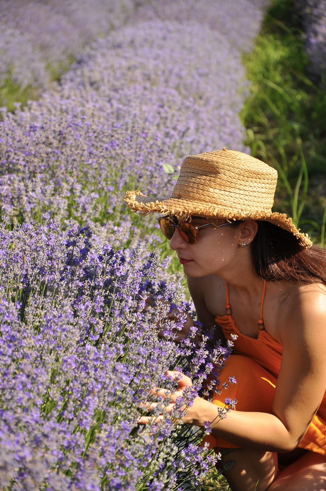

Chapter I · The Crossing
Bir günlüğüne başka bir ritim.
Büyükada'da denize açılan özel bir ev. Atölyeler, müzik ve uzun bir masa; elli kişi, on iki saat.
Büyükada'da denize açılan özel bir ev. Atölyeler, müzik ve uzun bir masa; elli kişi, on iki saat.
One Day on an Island, uzaktan takip edilen bir program değil. Kendi hızında katıldığın, ürettiğin ve yeni insanlarla aynı masaya oturduğun bir gün.

Çamların altında bir havuz, taş bir kayıkhane, geniş bir bahçe ve denize inen özel bir iskele. Gün boyunca evin dış mekânları yalnızca bize ait.
Bahçe, kayıkhane ve teras açık. Havuz gün batımına kadar kullanılabilir; arka bahçe ise biraz sessizlik isteyenler için.
Bir tekne. Bahçeye yayılan altı alan. Gün batımında müzik yön değiştirir; rotayı sen çizersin.

Özel tekne 12:30'da Karaköy'den, 13:00'te Kadıköy'den kalkıyor ve doğrudan evin iskelesine yanaşıyor. Müzik daha şehir geride kalmadan başlıyor.

Atölyeler bahçenin farklı köşelerinde açılıyor. Havuz, bar ve açık stüdyo gün boyunca yerinde. Kendi rotanı kendin kuruyorsun.

Güneş 19:05'te denize inerken masa kuruluyor, ışıklar yanıyor ve müzik yön değiştiriyor. Son tekne 00:30'da.
Her alanın kendi saati ve kontenjanı var. Katılmak istediklerini başvurunda önceden seç; detaylar için kartlara dokun.


Küçük gruplar, doğrudan temas ve her çalışmanın kendine ait bir köşesi var.
 Oğuz ÖnerKolektif Ses
Oğuz ÖnerKolektif Ses
Şeyma ÇavdurKoku Laboratuvarı Bisou MeStil İçgüdüdür
Bisou MeStil İçgüdüdür15:00'te bahçe bir saatliğine sessizleşiyor. Bu boşluk da günün müziğine dahil.
Kapasite elli kişiyle sınırlı. Başvurulara 72 saat içinde ödeme bağlantısıyla birlikte dönüş yapıyoruz.
Topluluğun içinden birinin referansıyla geliyorsan bize onun adıyla ulaş. Henüz bir bağlantın yoksa, yandaki kısa form kendini tanıtman için.
Tüm atölyeler, Bite foods, alkollü ve alkolsüz house pitcher içecekler; havuz, bahçe ve iskele kullanımı. Bar kokteylleri ayrıca.
Vapurla gelip mekâna kendi imkânınla ulaşabilirsin; ancak açılışı ve tekne deneyimini kaçırırsın. Kalkış saatleri kesin: Karaköy 12:30, Kadıköy 13:00.
Katılmak istediğin atölyeleri başvuru formunda önceden seçmen gerekiyor. Kontenjanı sınırlı alanları bu tercihlere göre planlıyoruz.
Mayo, havlu ve akşam serinliği için ince bir katman. Geri kalanı biz hazırlıyoruz.
Evet. Her misafirin ayrı başvuru doldurması ve formda birlikte geldiği kişiyi belirtmesi gerekir.
Mekânın kapasitesi elli kişi. Başvurular, günün ölçeğini ve dengeli akışını korumamıza yardımcı oluyor.
8 Eylül'e kadar tam iade yapılır. Bu tarihten sonra bilet, önceden haber verilerek başka birine devredilebilir.